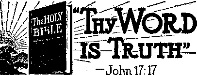
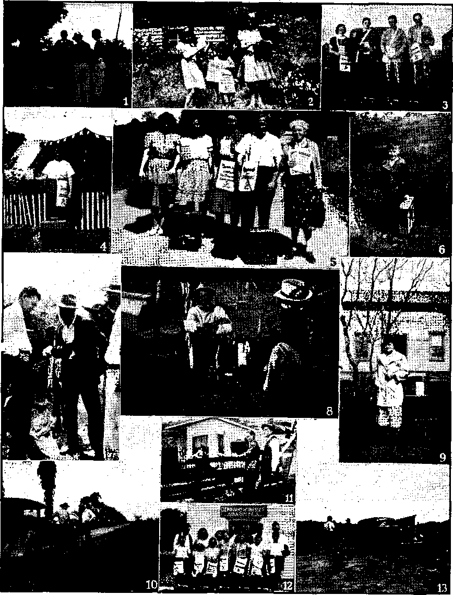
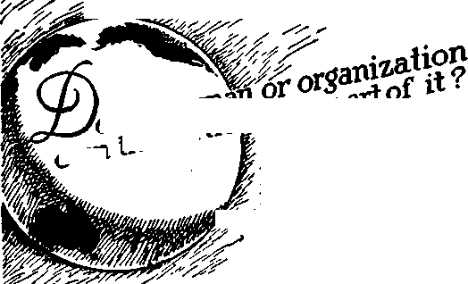

Some Facts About Mexico
The Talmud Muddle and the Way Out
“Thy Word Is Truth”
Constitutional Right on the Street
“Wonderful Counsellor’s” Victories
Why England Abolished Compulsory
Presenting “This Gospel of the Kingdom”
Published every other Wednesday by ' WATCHTOWER BIBLE AND TRACT SOCIETY, INC.
117 Adams St, Brooklyn, N. T., U. S. A.
OFFICERS
President N* H. Knorr
Secretary W. E> Van Amburgh
Editor Clayton J, Woodworth
Five Cents a Copy
11 a year in the United States |1.25 to Canada and all other countries
NOTICE TO SUBSCRIBERS
Remittances: For your own safety, remit by postal or express money order, When coin or currency ia lost Iti the ordinary mat is, there is no redress, Remittances from countries other than those named below may be made to the Brooklyn office, but only by International postal money order*
Receipt of a new or renewal subscription will be ac* knowledge^ only when requested. Notice of Expiration is sent with the journal one month before subscription .expires. Please renew promptly to avoid loas of copies, Send change of address direct to us rather than to the post office. Your request should reach us at least two weeks before the date of issue with which it is to take effect. Send your old as well as the new address. Copies will not be forwarded by the post office to your new address unless, extra postage la provided by you. Published also in Greek, Portuguese, Spanish, and Ukrainian*
OFFICES FOR OTHER COUNTRIES
England 34 Craven Terrace, London, W. 2
Australia 7 Beresford Road, Strath field, N, S. W. South Africa 623 Boston House, Cape Town
Mexico Calzada de Melchor Ocampo 71, Mexico, D. F. Brazil Caixa Postal 1319, Rio de Janeiro
Argentina Calle Honduras 5646-48, Buenos Aires
Entered ad second-class matter at Brooklyn, N. Y, under the Act of March 3, 1879.
So This Is Freedom
♦ The Daily Independent, Murphysboro, Ill., December 12, 1942, says:
The United States Supreme Court has rendered a unanimous decision upholding the government’s power to regulate wheat production, even when the crop is to be consumed on the farm. An Ohio farmer who planted 23 acres of wheat was fined $117.11 for raising 12 more acres than his allotment of 11 acres under the Agricultural Adjustment Act.
Granting that the decision is in accordance with the letter of the law, the reasoning of Justice Jackson, who wrote the decision, has far-reaching effect on every American citizen. He said that wheat, even if grown for home consumption, could be considered within the sebpe of Congressional regulation if it “exerts a substantial economic effect on interstate commerce”. To emphasize this point, he went further and said that even if such wheat was never marketed, it is subject to regulation because “it supplies a need of the man who grew it.which would otherwise be reflected by purchases in the open market”, and, therefore, it “competes with wheat in commerce”.
This is worth thinking over. Under similar legislation and court rulings, almost every productive act of American citizens could be construed to “exert a substantial economic effect on interstate commerce”,""and therefore be subject to Federal jurisdiction.
If a farmer cannot feed his surplus grain to his own cattle because this affects interstate commerce, how long will it be before he is told he cannot kill a hog or a beef for his own consumption because “it supplies a need of the man who grew it which would otherwise be reflected by purchases in the open market” ?
Almost any human activity of free and independent men and women could be brought under the dragnet classification of “exerting a substantial economic effect on interstate commerce”. The housewife who makes a dress for herself interferes with such commerce.
And this is happening in the United States, where the independence of the farmer is one of the most sacred traditions.
“And in His name shall the nations hope.”—Matthew 12:21, A.R.V.
Velum* XXIV Brooklyn, N. Y., Wednesday, June 23, 1943 Number 620
Some Facts About Mexico and Its “Evangelization”
MEXICO, the United States’ nearest “good neighbor” to the south, is constantly being discovered. It is a land of many discoveries and surprises, although it is feared that a lack of understanding has made some Americans very much disposed to think of it as a rather troublesome neighbor and a land where there is a good deal of quarreling going on. But this is probably not so much more the case in Mexico than it is in most other lands, that of the United States being no exception in the comparison. But in Mexico, with the warmer climate and the more ardent disposition of the people generally, quarrels are likely to be expressed more noisily and, shall we say? with more spirit. However, that is not exactly the thing this article intends to consider. It is the “evangelization of Mexico” that calls for some more or less pertinent observations. The pope recently credited Spain with the evangelization of the New World, meaning more particularly what is generally referred to as Latin America, and which includes Mexico. So, with some preliminary remarks about the land of Mexico itself, its “evangelization” will be given consideration.
Mexico has an area of more than three quarters of a million square miles (763,944, to be exact), which is nearly 2,000,000 square kilometers. Only two Latin-American countries are larger still: Brazil and Argentina. Mexico has a very extensive coastline, of which 4,574 miles are on the Pacific and 1,727 on the Atlantic side—on the Caribbean., The much greater length of the western coast is due to the 760-mile peninsula, Lower California. The country has a triangular shape and the mountdins are ranged in the form of U “Y” with its stem to the south. The mountain ranges form the escarpment of a plateau that takes in the larger part of the land, and rise' from 5,000 to 8,000 feet above sea level. This elevation accounts for the delightful climate, although Mexico is in the tropics. Mexico is a possible paradise, highly productive of wonderful fruits and flowers. It is rich in minerals, notably silver, and has a great amount of valuable oil.
Mexico has many lakes and lagoons, but none of them is large. The best known is Chapala, in the state of Jalisco. It is 50. miles long, 18 miles wide, and its scenic beauties have made its shores popular as summer resorts for the wealthy people of Mexico city and other sections of the country.
The climate, already touched upon, is equable, and on the central plateau it is cooler in summer and warmer in winter than in the United States. Indeed in most of Mexico there is so little difference in temperature between summer and winter that people wear about the .same clothing the year round.
The Mexicans say, ‘We have the climate that California boasts about,’ and at times one finds a sign with these words boldly painted upon it.
The flower markets of Mexico are a great attraction, and the people have a knack of arranging the flowers in artistic fashion. As the flowers are of all kinds, and generally brilliant in coloring, the effect is not easily described or imagined. Afexico is “the land of flowers”.
As it is located in the tropics, Mexico has many brilliantly plumaged birds, but there is also an abundance of the barnyard fowl, and a great variety of them. These, while less beautiful outwardly, are nevertheless appreciated, and consumed in great quantities I
Fish are abundant in the many lakes and lagoons, and there arb also many varieties of reptiles, some of them harmless, others not so harmless. These are found in the southern part of the country more especially.
The People of Mexico
The population of Mexico in 1940 was 19,473,741, and is now doubtless very close to twenty million. They are, in large part, Indians, descendants of the nations of advanced culture that inhabited the country when Cortez came and took over. An estimated ten percent, more or less, are white, but many of these have some Indian blood. A very large number are acknowledged to be of mixed blood, a fact that is indicated by their being called mestizos (mixed) ; and these mestizos form a connecting link between the wholly white and wholly Indian inhabitants. Nearly half the Mexicans are mestizos. The racial rivalry and hatred that might have been expected between the conquerors and conquered in Mexico is practically nonexistent, except in certain remote parts. The Spanish language is most commonly used, although about seven percent of the population still speak native dialects such as the “Nahua”, “Mayoehiche,” “Zapoteca-Mixteco,” and others.
In previous issues of Consolation something was said of the ancient civilizations that existed in Mexico, the Aztec and the Mayan, the latter occupying the peninsula of Yucatan. The still reminders of those civilizations are found in extensive and amazing ruins, while other evidences and vestiges are found in the arts, industries and customs still prae-ticed to a considerable extent by the Indians, greater in the remote regions, less in the modernized portions of the country.
The high general intelligence of the people at the time of the Spanish conquest throws into dark relief the more recent general ignorance. Until very recent times the large majority were illiterate, and even today such constitute more than half the population, due in large measure to the repression which the Roman Hierarchy invariably exercises upon efforts to educate the people. Education for privileged classes is better adapted to its objectives.
The present pope, speaking on the significant victory of the Nationalist cause in Spain, remarked that God had chosen that benighted land (although he did not call it benighted) to be the principal instrument for the evangelization of the New World (America). It was hoped by the Hierarchy that the victory of Franco the butcher in Spain might also lead to similar victories over progress in Latin America. History confirms the claim that Spain was instrumental in what the pope was pleased to call the “evangelization” of America. The process began with Mexico, as far as the mainland is concerned, and the methods which accomplished it left much to be desired. They were abetted by butchery and treachery.
The Cult of the Virgin
Among the first efforts in the “evangelization” of the peoples of Mexico was the forcible overthrow by Cortez of the image of the deity they had been worshiping and substituting instead an image of the Virgin. This precipitate action did not contribute noticeably to the popularity of Cortez and his band of marauders, nor did any recorded wave of devotion sweep the land in support of the cult of the Virgin. Just what the status of the Virgin was among her own worshipers at the time is not certain. Her immaculate conception had
not been declared.as a Catholic doctrine at the time, although the council of Ephesus, many centuries previously (A.D. 431),. had declared her to be the mother of God, practically a deification of the humble Jewish maid who said, “Behold the handmaid of the Lord.” In passing it is of interest to note that Ephesus had for many centuries preceding the date of the council been the principal place of the worship of Diana of the Ephesians, a superlatively virgin goddess, identified with Ashtoreth, Venus and, more remotely, Semiramis, mother of the would-be competitor of Jehovah, Nimrod. The cult of the Virgin is the outstanding feature of materialistic religion in Mexico, and centers about the so-called ‘Virgin of Guadalupe”, whose picture was miraculously (t) painted upon the cloak of a Mexican peasant and whose claimed apparition led to the “evangelization” of thousands of Indians. The statue of Diana, ‘which fell from Jupiter/ had nothing on the painting which fell upon the cloak for attracting worshipers. ‘Asia and all the World’ worshiped Diana, according to the Ephesians (Acts 19:24-35), and the Virgin of Guadalupe is worshiped by ‘America and all the world’ but under a larger variety of names and designa-, tions than were held by Diana of the many pendulous breasts.
The famous picture, supposedly miraculous, is at any rate an excellent example of Indian art. The Americana says respecting it:
Echoes have come down of a school of Indian painters, who flourished during the first 50 years following, the fall of Tenoch-titlan. . . . Little or none of the art of this period has survived, with the exception of one picture of international fame which, on account of the material on which it is painted and the artist’s treatment of his subject, almost certainly belongs, to this early Ibero-Indian school. This is the famous picture of Our Lady of Guadalupe, which made its appearance within eight years after the fall of the City of Mexico, or before 1530. The
' JUNE 23, 1943 religious legend'asserts that the picture of the patroness of the Mexican people was miraculously made [upon] the tilma or shoulder covering of a poor Indian named Juan Diego; historical investigation has shown that it was painted for a miracle play given in one of the new convent schools of the City of Mexico very shortly after the Conquest' This picture shows very considerable artistic talent which is neither Spanish nor Indian, but a. blending of the two.
So much for the myth of the Virgin of Guadalupe, which seems to combine in itself a number of features found in. legends relating to other saints.
Destroying the Records
One step toward the “evangelization” of the peoples of ancient Mexico was the destruction of their records. Chronicles of the tribes had for a long time been kept on folding books in the form of ideograms. Many thousands of the books were destroyed by the Spanish, conquistadors, who believed that they were an obstacle to the salvation, through Catholicism, of the heathen Indians. Some of the books, however, escaped the. flames and left their record of earlier times. They were rewritten in the alphabetic characters which the Spaniards brought, and subsequently translated into Spanish, German, and English. Notable among these translated Chronicles is the Cantare.s Mexicanos, dealing chiefly with the deities at one time worshiped by the Indians. For these various and multitudinous deities (there were some 300 of them) were now substituted the even more numerous “saints” of' Catholicism, presiding over the different affairs of human existence on the farm and in the town.
Adapting the appendages of demon worship to a so-called “evangelical” use, the Catholic missionaries passed on to the Mexicans the cultus of the “saints”, which “saints” in one way or another filled positions formerly occupied by the demons in the pantheon. The pantheon at Rome, originally dedicated by Agrip-
5 pa, was in A.D. 608 rededicated by Pope Boniface IV to the Virgin Mary and all the “saints”. In this pagan church different services go on at different altars with various congregations around them in worship of one or another of the “saints”, who are but the original demon-gods under other names. In Mexico “evangelization” of the Indians was accomplished by concessions of a kind similar to those made to early paganism in Europe. In this the Indians themselves helped along, retaining the worship of their idols while ostensibly worshiping before the cross. They simply placed the idol behind the cross, either openly or in a case.
The first missionaries were the Franciscans (A.D. 1522). One of the Franciscan monks, Peter of Ghent, claimed the conversion of the Indians to have reached 200,000 persons in the short space of six years; In 1531 the first bishop of Mexico, Zumaraga, claimed that in that year there were a million converts to the “Christian” religion of the Catholic variety. The Dominicans followed the Franciscans after a few years, and the Jesuits came in 1572, when the “conversion” of the districts settled by the colonists was about completed. They established missions in the northern part of Mexico, which at that time did not belong to the Spanish dominions.
With the beginning of the seventeenth century Mexico already abounded in magnificent church buildings, but the Indians were little benefited, often being treated with extreme cruelty by their Spanish rulers. The antipathy of the average Mexican for the Roman Catholic Hierarchy can therefore be fairly well understood. The ornate churches did little to contribute to their comfort, and were erected largely to satisfy the vanity of the bishops and to overawe the superstitious and keep the people generally under control so that they might be further exploited. The Mexican church became one of the wealthiest anywhere on earth, and the populace the most oppressed and illiterate. This combination is the usual rule under the Roman Catholic setup. The “church” and the crown ruled and robbed colonial Mexico for 300 years. Nothing halted the grasping clergyr as a class. Of these the historian Lempriere says, emphatically:
The Mexican Church, as a church, fills no mission of virtue, no mission of morality, no mission of mercy, no mission of charity. Virtue cannot exist in its pestiferous atmosphere. The code of morality' does not come within its practice. It knows no mercy, and no emotion of charity ever moves the stony heart of that priesthood, which, with an avarice that knows no limit, filches the last penny from the diseased and dying beggar; plunders the widows and orphans of their substance, as well as their virtue; and casts such a horoscope of horrors around the deathbed of the dying millionaire that the poor, superstitious wretch is glad to purchase a chance for the safety of his soul, by making the Church the heir to his treasures.
First Priests Poor
The first priests who came to Mexico were poor. After 300 years of undisputed control the clergy were amazingly rich. But the people lived in the most abject poverty. The Inquisition helped to keep the people down and filled prisons, filthy, disease-breeding prisons, to overflowing. The clergy were out to get all they could lay their hands on, or else—. They owned by far the greater and best part of the land.
Even as late as 1845, two decades or more after the fight for independence from Spain had broken the power of the foreign rulers, and to some extent that of the clergy, the American ambassador Thompson wrote:
The immense wealth which is collected in the churches of Mexico is not by any means all, or even the larger portion of the wealth of the Mexican church and clergy. They own very many of the finest houses in Mexico and other cities (the rents of which must be enormous). besides valuable real estate all over the republic. Almost every person leaves a bequest in his will for masses for his soul, which constitute an encumbrance upon the estate, and thus nearly all the estates of the small proprietors are mortgaged to the Church. ... Of all the artifices of cunning and venality to extort money from credulous weakness, there is none so potential as the mass 'for the benefit of the souls in “purgatory”.
War for Independence
The Inquisition, that institution of unbounded infamy, also contributed its share toward keeping the people “evangelized”, But in spite of all the repression and religious viciousness, the people more and more asserted their innate love of liberty and justice. In 1767 the Jesuits were thrown out, although not by the people. That viper’s-brood of iniquity brought about so much turmoil, under cover of a religious “morality”, that they could no longer be tolerated.
While the higher clergy and the Spanish priests cared nothing for the people, honest native priests have contributed their share in lifting the oppressive hand of the “church”. First among these were Don Miguel Hidalgo and Jose Maria Morelos, who raised the cry of liberty in 1810. Many responded and joined in the revolution, which promised well. But it failed because of . the lack of organization among the fighters for liberty. After an initial success at Monte las Cruces on October 30, 1810, Hidalgo relaxed his efforts long enough to give his opponent an advantage. He was finally defeated, and was executed in the following year.
When the fight for independence was finally won, the government was made up of a council of six, with Gen. Augustin de Iturbide as president. But, with the connivance of the Hierarchy, he was made emperor, May 19,1822, and was crowned in the cathedral of the capital on July 21 of that year. He was voted a yearly allowance of a mere $1,500,000, and soon became arrogant. Then he was forced to abdicate and leave the country. He was allowed a pension of $25,000 if he would stay away. Iturbide, however, would pre-JUNE23, 1943
fer the $1,500,000, and so made an effort to get his crown back. Returning to Mexico on July 14,1824, he was arrested, and was shot five days later. In 1838 he was posthumously given the title of “Liberator” and his remains brought to Mexico city and deposited in the cathedral, where they now rest together with the remains of Hidalgo and Morelos. He is hardly in a class with these patriots, however.
The next nine years saw many changes in the Mexican political scene. In 1833 Santa Anna became president. He catered to the Hierarchy, as it suited his purpose, but he had his tongue in his cheek. The burial of his leg is an example of what his attitude was toward the clergy. Un-' questionably, it was a very religious episode. In an engagement with the French at Vera Cruz, Santa Anna lost one of his legs. He sent orders to the Mexican archbishop that funeral ceremonials must be arranged for the solemn burial of his limb in Rome’s consecrated cemetery at the capital. The archbishop protested that there was no precedent for doing anything of that sort; but Santa Anna decided that the precedent should be made then and there. His was a good Catholic leg and should have a proper Catholic burial. And so it was. The clergy obediently followed the leg to its l^st resting-place with due obsequies and ritual, mass and prayer. But only two years, no more, passed and the clergy got revenge. They turned against Santa Anna, saw the army revolt, and led the' mobs that disinterred Santa Anna’s good Catholic leg, overturning the monument that had been erected over it, and kicking the leg, or what was left of it, around the city until they tired of their sport. Santa Anna retired and one president after another followed him in quick succession.
The Mexican war with the United States brought Santa Anna into prominence again. The clergy succeeded : in playing their part. They instigated a rebellion in the ranks of the United States
armies, and a considerable number of Catholic soldiers deserted and joined the Mexicans. (School histories in America do not stress this significant fact.) Santa Anna’s tongue was in his cheek again. But, in spite of the treachery, the American armies were successful, and Santa Anna had but little to say in the treaty of Guadalupe Hidalgo (which, including the Gadsden purchase from Mexico of certain lands, added to the United States the territory that now comprises California, Nevada, Utah, Arizona, New Mexico, and part of Wyoming and Colorado). Mexico needed the money badly, and the addition of nearly a million square miles of land was welcomed by the country without a name, but variously called America (as though there were no other America), United States (as though they were the only ones), Columbia (in song), and Uncle Sam in good humor.
But to return to the Hierarchy, which played its part in all these vicissitudes of Mexico and its “evangelization”. Catholic statesmen were not wanting who sought to oppose the progress of democracy with the claim that the people of Mexico were really incapable of selfgovernment, and that they would either have to revert to the old viceregal system (under Spain) or be brought into subjection to some other foreign power (not mentioning any name). At the same time there were those north of the Rio Grande who thought it would be quite a good idea if the whole of Mexico were absorbed by the United States, and one can only wonder whether these suggestions did not all have the same source, in order to drive Mexico back to the arms of Spain, the stepmother country.
In Mexico itself a ready answer to these unwelcome suggestions was not wanting. It was pointed out that the Catholic church in Mexico held property amounting to more than one-half of the landed estate of the nation and valued at $250,000,000. Incidentally mention was made of the monasteries as the shame of Mexico, even though the morals generally were not of a high standard. Even the pope had protested from Rome about the morals of the clergy and the monks. But they paid little attention to the protest of either pope or people. They were playing their own game.
When, in 1853, Santa Anna was permitted to return and proclaim himself dictator his first official act was to permit the return of the Jesuits to Mexico. He also made arrangements for the coming of Maximilian, doubtless under the direction of the Jesuits; but things didn’t turn out the way these “evangelizers” had expected. Santa Anna was sentenced to be hanged, and escaped only because of the magnanimity of Juarez, minister of justice undei- Santa Anna’s successor, Alvarez.
Juarez, in 1857, drew up the laws of reform, which provided for the separation of church and state; abolition of the privileges claimed by the clergy, as well as abolition of monastic orders, including the “sisters of charity”, banishment of the Jesuits for good, freedom of religion and worship, free and compulsory education in public schools, and the prohibition of numerous religious privileges and abuses.
And all this took place only a year after the pope, in 1856, complained of the abolishing of the ecclesiastical jurisdiction in Mexico the year previous, the confiscation of certain church properties, the exiling of the bishops of Puebla and Guadalajara, and the dispersion of the monks. Commonfort, elected 1856, 'was no friend of Rome. It was under his presidency that Juarez drew up the afore-mentioned laws of reform. The next president attempted a deal with Rome. His name was Zuloaga, elec^d in 1858. He did not last long, and the fight began all over again, within a year. Juarez became president.
In 1861 the pope spoke again, as he generally does when something seems to be getting away from the clutches of the Hierarchy anywhere on earth. He
CONSOLATION
complained about the ‘persecution* of the church in Mexico. President Juarez had the possessions of the “Church” declared national property (and weren’t they?)- Churches were plundered, bishops expelled, and clergymen, monks and nuns were treated somewhat in the way they had been treating the rest of the people ; and they didn’t like it.
The Emperor Maximilian
Then came Maximilian, looking for glory and an empire, and the whole church party were back of him. He wasn’t a Mexican at all, but an Austrian, and had no business in Mexico other than to forward the depredations of the Roman Hierarchy and get some glory for himself. He was merely a tool in the schemes of the Hierarchy for power, hoping to extend to America the system of authoritarian rule which had served its ends so admirably in Europe. Maximilian came with the “blessing” of Rome, and, in return, conferred many favors upon the church,' receiving a new papal nuncio in Mexico. Negotiations for a concordat, however, failed. The reasons have never been clear, but the popq was doubtless waiting to see how this scheme would be likely to turn out before committing himself too definitely.
Playing both ends against the middle takes a little time, and before the wildcat scheme had progressed very far Maximilian was in a peck of trouble, and Charlotte (Carlotta), his pathetic wife, hastened to Europe to implore the aid of pope and king; but these only shrugged their shoulders. True, Maximilian had gone with their “blessing”, but it was up to him to carry on from; there. They could do nothing. Besides, the United States was against the whole thing and it all looked definitely risky to back Maximilian any further. He seemed to be the wrong horse, after all.
The pope’s duplicity was too much for Charlotte. She was found, after her devastating interview with him, wandering about the streets of Rome, playing JUNE 23,11)43
in the fountains and babbling childish things. Charlotte lost her . reason, and Maximilian his empire afid his life. He was executed June 19, 1867. But the church gave him a grand funeral from the cathedral of Vienna the following year.
With the re-establishment of the republican government under President Juarez, the “Church” had further cause for complaint, and the next president, Lerdo fie Tejada, didn’t suit any better, for he adhered to the policy of religious toleration, and if there is anything Rome doesn’t approve it is religious toleration. In 1873 the Mexican Congress passed a law providing for the separation-of church and state and restraining the congress from issuing laws prohibiting or establishing religion. Marriage was declared a civil contract under the exclusive jurisdiction of the state. Religious societies were prohibited from owning real estate and all inhabitants of the republic were declared free from religious . vows. These provisions were adopted by overwhelming majorities. Alas, poor Yorick! But Mexico had now had 52 dictators, presidents and rulers in.59 years, Lerdo the last B. D. (before Diaz),
Porfirio Diaz forced his predecessor out of office and was proclaimed provisional president November 24, 1876, later becoming constitutional president. Gonzales succeeded him, and four years later Diaz again became president, and continued then as president for over a quarter of a century. He built railroads, highways, roads, and harbors, and made the coastal regions places of resort. He drained the valley of Mexico. He increased the revenue of Mexico over 400 percent, and encouraged foreigners to settle and invest in the country in his program of expansion and development. He created a steadily increasing credit for the nation. He insisted upon honesty and method on the part of those holding public office, and made the heads of departments responsible for any diversion of public funds to private advantage. He introduced a strict system of accounting in government.
During the period of Diaz’ influence the country made great progress and saw . a complete change as to commercial con-| ditions in the republic. Harbors were constructed to accommodate large oceangoingvessels, and international relations were extended. The industrial, commercial and educational conditions of the country also improved remarkably. But the revolution of 1910 caused a definite retrograde movement, checked only by the rise of the oil industry.:
In 1917 a new constitution was adopted, but restrictions upon the religious business continued. The enact-■ ments of.1917, in fact, provided for confiscation by the government of churches, schools and hospitals in the possession of the religious bodies, and required that all Mexican clergy be native-born. Foreign-born clergy were invited to “scram”. The “Church” cried ‘Persecution I1 with' renewed emphasis, and began to put forth determined efforts to enlist the sympathies of the United States, even to the point of almost succeeding in getting the “good neighbor” to the north to declare war in order to pull the Hierarchy’s chestnuts out of the Mexican fire.
At present there is a lull in the stormy career of the Mexican church. There are sincere priests who ignorantly continue to submit themselves to the domination ' of the “big boys” in the Boman Hierarchy setup. Of these priests (only a minority) Frank Waldeo, in an article for Colliers' (October 24,1942), said:
The Church in every Latin- American country has hundreds of humble parish priests who are with the people. But many church leaders are enemies of American democracy; they take instructions from the Spanish Falange, which is under orders from Berlin. They are served by a rich, hired press, by groups of clever writers and by the reactionary landowning classes.
President Calles’ Statement
Former President Calles summed up the situation without any “ifs, ands or buts” in the following statement (in 1926):
Why be blind, why fool ourselves about the role the Roman Catholic Church has played in Mexico for four hundred years? There is no redeeming feature to justify'her existence anywhere on earth; and she has been the curse of my country since her first priests came.
One has only to study what the Church has accomplished with the destinies of Italy, Austria, Spain and Ireland. She has interfered In the polities, indeed she has been the politics, of every country she has sunk her talons in for nearly two thousand years. . . . She made and unmade kings and dynasties. Her dignitaries helped a thousand ruling houses to trample on the poor. She organized crusades, .declared war, wrote peace treaties, and drew arid redrew the map of the world.
The Roman Church has flourished precisely to the extent that ignorance and superstition and mendicancy have prevailed. She drew a line from polo to pole and gave a hemisphere to Spain and a jutting peak of Brazil to Portugal. 'She fixed the language and the customs of all the Latin-American world. Wherever illiteracy existed, there she was powerful. She throve in the night of the Dark Ages and she fattened and grew dissolute on the wretchedness of human [creatures].
Just as the world has advanced in civilization and science and knowledge and culture, so has the Catholic Church waned in prestige, influence and power.
Where she could not convert, she murdered. Where she could not persuade, she tortured. Where she could not rule, she ruined. Cortez in Mexico,, Pizzaro in Peru, and Torquemada in Spain are perfect specimens of her crossbearers and her tactics. Today she sulks and ■writhes in the impotency of the tiny terrestrial area where the world has confined her on the Hill of St. Peter, just as the world has always had to confine menaces. But she watches and waits (for what are centuries to her program?) for a chance to recover her lost control. The whole world had better keep an eye on. Rome! [And the world is paying now for failing to do so!—Ed.}
And what a straight face she assumes when she talks of tolerance, of freedom of the press, of speech, of conscience! Shades of Saint Bartholomew! Read her red-stained, toreh-blaekened history—talk of tolerance, indeed!
There has never been bloodshed' in Mexico but that the Catholic Chureh has not been largely responsible for it. Her modern boast that two priests, Hidalgo and Morelos, helped us win our independence from Spain means nothing, because she is an organization that prospers by taking advantage of expedients. And when we did gain our freedom, the Chureh made those two heroes and their companions incorporate her in our Magna Charta as the state religion. What she could not prevent—our independence—she appropriated to her own ends. George Washington was a Mason; yet Masonry did not,insist on being made the official spiritual organization of the United States.
The Catholic Church seized four-fifths of the lands of Mexico in our early days. She dominated our internal politics and dictated our external policies. As we struggled toward the light, she made an emperor of Augustin de Iturbide to bold the poor in chains. Later she took advantage of our civil war and enthroned Maximilian ^and Carlotta on Chapul-tepee. Cowardly as ever, she deserted the former when he was sentenced to the firing squad, and drove the latter insane by refusing to ask Juarez to spare her husband’s life. ...
Always, I repeat, the Roman Catholic Chureh has prospered in direct ratio to the ignorance and misery about her. And when General Obregon and I tried to do something for the poor, unhappy, landless countrymen, vested business screamed “Bolshevism!” and the Catholic Chureh howled “Atheism!”
Not meddle in politics! The Church has never done anything in all her dreadful career except meddle in politics! Look at what she did to England when Henry VIII broke away from her. Look at what she did to Germany when Martin Luther left her in disgust. Look at what she did to Savonarola when he tried to reform the evil clergy. Look at what she tried at first to do to Ignatius Loyola, until she found there was a place in her hierarchy for that fierce warrior.
Look at what she did in the United States when she tried to involve your country in war with Great Britain by sending her Fenian hordes into Canada. Look at what she tried to do to France when that enlightened republic wearied of the costly cancer the priesthood had become. Look at what she has' tried to do to Italy since her temporal boundaries were circumscribed to the premises of the Vatican. Look at what she did just recently, when Spain tried to wrench away from a state religion, but did not have the strength.
Look, indeed, at what the Church has done in every land that has awakened from the nightmare of Catholicism and stepped forth into the light of reason and of science. Look at her Index Expurgatorius and find there the roll call of all men who have made the world a better place to live in.
The Hierarchy in the United States could not let this statement (published in Liberty magazine of November 20, 1926) pass unnoticed. In December of that year it issued a “Pastoral Letter on the Religious Situation in Mexico” couched in honeyed terms and fair. speeches. Had we not the history of the Hierarchy and the Inquisition to warn us against this organization, it would move a heart of stone to read this pastoral letter, with its appeal to Christian virtue and patience and all that is desirable and of good report. Were the Roman Church such as this letter sets forth all one’s sympathies would be enlisted on its side. But, alas, the picture drawn by Calles appears to be a truer likeness. Commenting further on the situation he said, significantly:
I can well understand that it is difficult for the people of the United States to comprehend that there are in Mexico trouble-makers who seek to cover their political manoeuvres with the cloak of religion. I know very well, and I envy this advantage possessed by the
United States, that not a single article referring to religion is contained in the American Constitution, simply because your people are sufficiently fortunate not to be under the necessity of including anything of the sort in their fundamental law. There the churches distinguish between their religious and their political attitude and conduct, while in Mexico, from the Independence to the present, direct interference of the Catholic church in various manners in temporal and , political matters has been a constant historical problem. It is not understood in the United States that this meddling is the only reason for the constant weakening of the spiritual influence of the Catholic Church in Mexico, until today, with the exceptions which I have named and of a very small percentage of Catholics of good faith, but who are not capable of .seeing clearly to the bottom of things or into the entanglements of the Chureh intrigues, all of the Catholics of Mexico who are good Mexicans make a definite and perfect distinction between their religious duties and the obligation which is urged upon them to approve of, and participate in, the temporal or political activities of their unworthy shepherds.
Mingled with the superstition and ignorance that is Catholicism in Mexico, and with its filth and its cruelties, are the forms of Christianity. Often they are hardly recognizable, so distorted are the lineaments of truth. But God has permitted the mixture of error and truth, of wheat and of tares, to continue until now. The end, however, has come, and the tares are bundled for the burning also in Mexico. There must be and are in that beautiful and yet unhappy land, among the lowly and oppressed, an unnumbered multitude of persons of goodwill who, learning the truth, will worship God in spirit and in truth, hailing His King with the palms of homage and submission. Thus will be accomplished its genuine evangelization,
THE New York Times has a column story by Harrison Forman, sent from Chungking, China, with the engaging headline “Sacred Saffron of Priests Aids Foe’s Burma Advance”. It explains that, in actual practice, the poongees are the meanest and crookedest people in Burma, as would readily appear to any who are acquainted with the religious business elsewhere, or anywhere.
Mr, Forman explains: “In practical example, a businessman may welsh on a contract or a debt by simply becoming a poongee, and he thereby is cleansed of all worldly obligations and responsibilities. The poongees are arrogant and sacrosanct in so far as the police are concerned. The poongees are generally regarded as holy men who can do no wrong.” What a familiar setup!
When the Japanese invaded Burma it soon developed that these yellow-robed Buddhist priests were their spies. In their “sacred saffron” they acted as snipers, arsonists, wire-cutters, guides to the Japanese, etc., and in some instances set deathtraps for dispatch riders by stringing wires across roads and thus decapitating them. It shows what priests can be entrusted to do when wholly and completely devoted to the doing of the will of their father, the Devil. At length the aviators of the Allied forces came to understand clearly that whenever these yellow birds showed up the Japanese w’ere sure to- be not far behind them. Six of them were caught waving white cloths and signaling with mirrors to the Japanese, and were shot where they stood.
14,000,000 Murdered in 11 Years
♦ Since the Japanese started their plan of murdering their way into control of the planet, in the year 1931, it is estimated, 14,000,000 have been killed. This includes 6,300,000 civilians, and 2,300,000 Chinese soldiers, in China alone.
THE Talmud, known only by name among the non-Jewish population of the lands of “Christendom”, is a very important work among the Jews themselves. Indeed, rabbis and other religionists among them are not wanting who consider the Talmud more important than the word and law of God himself. In this attitude they do not differ from other religionists, however; for it is the common genius of this class to exalt human tradition above the inspired Scriptures.
There are two parts to the Talmud, the Mishna and the Gemara, the latter being a commentary on the first. Here again the rabbis often show that human contrariety, which insists on being consistently inconsistent, by esteeming the Gemara as more important than the Mishna on which they are merely annotations and comment. Together they total many thousands of pages, dr a dozen volumes. _ '
The Mishna is held to contain the oral or ‘unwritten’ law of God, as distinguished from the written law contained in the first five books of the Scriptures, the Pentateuch. The contents of the Mishna are believed to have been handed down from Moses and transmitted by one generation to another until finally committed to writing. In Catholicism tradition remains indefinite and uncollected. Jewish tradition in the Talmud is gathered in some kind of order. At first it was a vast inconvenient and unwieldy aggregation of writings, fairly well defined, but uncollected and disorganized. Generations of rabbis labored to get some system into the collection, and' eventually the immense volume of religious rules and tales, comment and superstition was divided into six main sections or Sedarirn:
1. Zeraim (Seeds): Ritual rules relating to agriculture.
2. Moed (Festival): Rules on the Sabbath and festivals.
JUNE 23, 1943
3. Nashim (Women): Rules governing marriage, divorce, etc. '
4. Nezikim (Damages): Civil and criminal laws.
5. Kodashim (Sacred Things): Rules dealing with sacrifices and the temple service.
6. Tohoroth (Purification): Rules concerning things clean and unclean.
Each of these main sections is subdivided into numerous treatises on various subjects of ecclesiastical rule and regulation.
The Gemara goes into numerous details and particulars concerning the Mishna, often illustrating the point or losing it by means of myth and fable, some of it ridiculous in the extreme, and other parts of it as blasphemous as only religionists can be when they give themselves free rein, or are given free rein by superstitious supporters. Thus, in the Talmud God is represented as praying, wearing phylacteries (considered so important by the Pharisees —Matthew 23:5), and eyen as needing a sacrifice to atone for himself because He lessened the size of the moon! In another place God is represented as reciting the lessons He hears from the lips of the rabbis! This presumption reminds one of the claim of the Roman priests that they offer up “God” whenever they say mass, and that He must come at their “command”. Both of these wicked and demon-inspired notions exalt the creature above God and serve the Devil’s purpose of dishonoring the holy name of God by every means possible.
The Talmud, in another place, gives us the following piece of nonsense;
The schools of Hillel and of Shammai were disputing for three years about a certain point in the law; each side maintained that it was infallibly right. At last a Bathkoi came down from heaven and said, The opinions of both are the words of the living God, but the law is as the school of Hillel. [Believe that and you can swallow the whole Talmud.]
, Here is a Talmudic prescription for 13 ' nosebleed which may come in handy, though it is confessed one cannot see how :
For the bleeding at the nose, let a man be brought who is a priest [of course], and whose name is Levi, and let him write the word * Levi backwards. If this cannot be done, get i a layman, and let him write the following words backwards: ‘Ana pipi Sbila bar Sumki;’ or let him write these words: ‘Taam dli bemi keseph, taam li bemi paggan.’ Or let him take a root of grass, and the cord of an old bed, and paper and saffron and the red part of the inside of a palm-tree, and let him burn them together; and let him take some wool and twist two threads, and let him dip them in vinegar, and roll them in the ashes and put them into his nose . . .
There is more Talmudic wisdom about the way to stop nosebleed, but this is enough. After reading it, one can dispense with looking up the other remedies this book may contain.
When it comes to the subject pf “Women” the Talmud contains much that cannot be translated into English; it would be too indecent. In this respect ' it compares with certain Latin writings on similar subjects that are used by the Boman priesthood in absolving their female penitents. Religious writings seem to drift into these things with ease. The religious priesthood and rabbis have, in all times and climes, shown that idleness has with them been the means of vice. Concerning the Talmud the M’Clintock and Strong Cyclopedia says:
... in one of the treatises of the Talmud called Challah we find, almost verbatim, what our Lord says in Matthew v. 28 ["But I say unto you, That whosoever looketh on a woman to lust after her hath committed adultery with her already in his heart”]; and yet that portion of the Talmud is written in language so obscene and immoral that it would be difficult to meet its equal among the most licentious publications of ancient and modern times.
The Talmud gives detailed attention to the tithes that must be given to the 14
Levites and priests. This reminds one of the words of Jesus at Matthew’ 23:23: "Woe unto you, scribes and Pharisees, hypocrites 1 for ye pay tithe of mint and anise and cummin, and have omitted the weightier matters of the law, judgment, mercy, and faith: these ought ye to have done, and not to leave the other undone.” This well sums up the Talmud and its contents. Jesus infallibly put these religious quibblcrs on the spot then, but they kept on in the way they w’ere going. The ■ Talmud is representative of their pomposity, their triviality, their ‘morality’, and their futility. There are some twelve volumes, comprising a total of about 3,Q00 pages, of these minutiae.
The Talmud is in reality a library of books, a sort of encyclopedia of Jewish literature, human wisdom and folly, all of a religious nature. At one time they contained highly offensive references to Mary and Jesus. This fact brought upon the Jews much persecution and resulted in the Talmud’s being proscribed and thousands of copies being burned. Finally the Jewish rabbis realized the need of omitting these passages if they would avoid unremitting persecution. They decided that they could convey this, to them, important information orally; and hence these portions were omitted.
The contents of the Talmud have been variously evaluated. They doubtless contain a few things of historical and literary value. Their “explanations” of the Mosaic law go into inexhaustible and “intimate” detail. Looking for real wisdom in the Talmud is like looking for a needle in a haystack. Says Farrar:
Anything more utterly unhistorical than the Talmud cannot be conceived. It is probable that no human writings ever confounded names, dates and facts with a more absolute indifference. The genius of the Jews is the reverse of what, in these days, we should call historical . . . Some excellent maximven some close parallels to the utterances of Christ —may be quoted, of course, from the Talmud, where they lie imbedded like pearls in “a sea” of obscurity and mud. It seems to me indis-
CONSOi-ATION
pensable—and a matter which everyone can now verify for himself—that these are amazingly few, considering the vast bulk of national literature from which they are drawn.
When it is remembered that the Talmud consists of religious writings of Jewish clericals, or rabbis, who were interested chiefly in maintaining their own ‘infallibility’, the reason for its futility will be easily seen. It is a concrete example of the truth of Jesus’ ’words about the Pharisees, “For they bind heavy burdens and grievous to be borne, and lay them on men’s shoulders; but they themselves will not move them with one of their fingers.” '
Many, if not most, of the miseries of the Jews have been brought upon them by their own religious guides, who have time and again led them into the ditch, but who have always stoutly maintained their own supremacy. The Talmud has been the instrument placed in the hands of these blind guides by their father, the Devil, whose desires they have done and continue to do now, as in Jesus’ day. —John 8:44.
Many of the Jews are breaking away from the influence and bondage of the Talmud and are looking for something more satisfactory. Years of rabbinical misinformation, however, have conditioned them against an impartial investigation of the message of Jesus, the Messiah. Yet only His message and His way will bring to the oppressed Jews, and to all that are oppressed, the deliverance they seek. Those who are of goodwill among them will not let the rabbis and their Talmud stand in the way of receiving the greatest blessing ever offered to men. Let them come and partake of the water of life freely. .
FOLLOWING its standard practice, the German government now ruling the Netherlands issued ukases that Jews are henceforth to be excluded from public parks, zoos, restaurants, saloons, cafes, hotels, sleeping cars, dining cars, * theaters, cabarets, cinemas, sports grounds, concerts, libraries, and reading rooms. They may not visit public markets, auctions, produce exchanges, or slaughterhouses. They may not eat kosher meat, may not employ Germans, may not attempt to enter a university, and may not work in the public service in any capacity. They may not enter or live in certain towns, may not own a radio, may not play in state orchestras, and if they are lawyers, dentists, pharmacists, notaries public or translators they must not accept non-Jewish clients or patients. They have been compelled to dispose of all agricultural land and fishing rights. For violation of any of these regulations they are transported to Germany to work in labor battalions, as slaves. They are encouraged to commit suicide, and are told that this is the only right that they have. It all has the familiar ring of the old-time Inquisition, to which it owes its origin.
Last Supper Chamber
♦ In the year A.D, 70 Jerusalem was leveled to the ground, just as Jesus prophesied would be the case. Anybody with any honesty can therefore see just how much truth there is in the story in the London Catholic Herald that Catholic interests in America (Bishop Gannon Erie is mentioned) are trying to purchase from its Mohammedan owners the Upper Chamber in Jerusalem in which Jesus and His apostles had together the Last Supper. Without a doubt not one stone was left upon another of the place in which Jesus and the apostles had their last meal together and the memorial of His death was inaugurated.
ADAM was sentenced to death for his rebellion. When he actually went into death after 930 years, justice was satisfied. The law of God demanded the life of the perfect human creature that sinned. It had received it when Adam died. Between the time of his sentence and the time of his death he begot many children, who were born into the earth imperfect and having no right to life. Hence the living of the children was only by permission of Jehovah God, and everyone who died did so because of imperfection resulting from the sin of father Adam.
The Scriptures clearly show that God purposed at the time of Adam’s expub sion from Eden the redemption and deliverance of obedient and faithful offspring of Adam. Hence His wisdom led Him to embrace in the effects of this death sentence all of the human family, all of Adam’s offspring, so that in due time He might redeem by the sacrifice of One all those thereof who should believe and obey. “But the scripture hath concluded all under sin, that the promise by faith of Jesus Christ might be given to them that believe.” (Galatians 3: 22) “Therefore as by the offence of one judgment came upon all men to condemnation ; even so by the righteousness of one the free gift came upon all men unto justification of life.” (Romans 5:18; Deuteronomy 19:21; Hebrews 5:9) So Adam’s sentence and the resulting effects upon all his offspring must stand. An earthly court may reverse its judgment because, imperfect, but God cannot reverse His, because it is perfect; and He cannot deny himself. He could make provision, however, for another man exactly equivalent to Adam to go into death voluntarily. By thus dying his life could be given as a corresponding price for Adam’s offspring, that those of his offspring who devote themselves to God might be released from death and be given a trial for life.
_ The Scriptures definitely show that it was God’s purpose from Adam’s fall onward to make just such a provision. He made a specific promise involving this, saying: “I will put enmity between thee [the Serpent] and the woman [God’s organization], and between thy seed and her seed; it shall bruise thy head, and thou shalt bruise his heel.” (Genesis 3:15) This promise of Jehovah God must be carried out, because God is unchangeable. Having made the promise, He will perform it.—Malachi 3 :.6: James 1:17. .
It is important, then, to understand the meaning of the term ransom. Ransom means something with which to loosen; that is, a redemptive price. It is the means or price or value which can be used in loosening or releasing something that is in bondage or in restraint or imprisoned. Necessarily the ransom price must be exactly equivalent to that, or corresponding with that, which justice requires of the thing or person that is in bondage or imprisonment. Hence, as to man’s redemption, ransom means an exact corresponding price. A perfect man sinned and forfeited the right to perfect life for his offspring. Hence an exact corresponding price would be the death of another perfect man and the value of his life presented in the place of the life that was sinned away and that was held in bondage, being denied to Adam’s offspring.
The sin-offering is identical with the ransom. On the atonement day performed by the Jews from Moses’ time onward, the blood of the bullock and the blood of the Lord’s goat represented the poured-out life. Therefore it stood
for the ransom price or value of the life. The carrying of the blood into the Most Holy of the tabernacle or temple (which represented heaven itself) and sprinkling it before the mercy seat pictured Christ’s sin-offering and His presentation of the value or merit of His perfect human life'in the presence of God.—Leviticus, chapter sixteen.
Other scriptures show that Jehovah purposed that the great Redeemer should pour out His life in death and that this should constitute the ransom price, which should be made an offering for sin. God foretold this, which is equivalent to a promise, or covenant, when He used His prophet to write concerning the great coming Redeemer the following:
“Who hath believed our report? and to whom is the arm of the Lord revealed? For he shall grow up before him as a tender plant, and as a root out of a dry ground: he hath no form nor comeliness; and when we shall see him, there is no beauty that we should desire him. He is despised and rejected of men; a man of sorrows, and acquainted with grief: and we hid as it were our faces from him; he was despised, and we esteemed him not. Surely he hath borne our griefs, and carried our sorrows: yet we did esteem him stricken, smitten of God, and afflicted. But he was wounded for our transgressions, he was bruised for our iniquities; the chastisement of our peace was upon him; and with his stripes we are healed. All we, like sheep, have gone astray; we have turned every one to his own way; and the Lord hath laid on him the iniquity of us all. He was oppressed, and he was afflicted, yet he opened not his mouth: he is brought as a lamb to the slaughter, and as a sheep before her shearers is dumb, so he openeth not his mouth.
“He was taken from prison and from judgment: and who shall declare his generation? for he was cut off out of the land of the living: for the transgression of my people was he stricken. And JUN£ S3, 1S43
he made his grave with the wicked, and with the rich in his death; because he had done no violence, neither was any deceit in his mouth. Yet it pleased the Lord to bruise him; he hath put him to grief: when thou shalt make his soul an offering for sin, he shall see his seed; he shall prolong his days, and the pleasure of the Lord shall prosper in his hand. He shall see of the travail of his soul, and shall be satisfied: by his knowledge shall my righteous servant justify many; for he shall bear their iniquities. Therefore will I divide him a portion with the great, and he shall divide the spoil with the strong; because he hath poured out his soul unto death; and he was numbered with the transgressors; and he bare the sin of many, and made intercession for the transgressors.”—Isaiah, chapter 53.
The dead could never live again, nor could those who are living ever hope to have eternal happiness unless the disability inherited from Adam be first removed. The Scripture is quite clear that this can be removed only by means of the great ransom sacrifice. Since ransom means an exact corresponding price, the ransomer must be exactly like perfect Adam in Eden.
A perfect man had sinned and lost everything for his offspring. Therefore none but a perfect man could provide a price sufficient to buy and release believing men and women from the effects of the sentence of death upon their forefather Adam, Divine justice demanded the life of a perfect human creature, and such was received when Adam went into death. It follows that divine justice would accept nothing more or less, as a price for releasing obedient human creatures, than a perfect human life. In order to meet these divine requirements for redemption, the ransomer must be a perfect human creature. Jehovah God, in His infinite loving-kindness and by His miraculous power, provided the. requisite Ransomer in the person of His beloved Son, Christ Jesus.
• 17
THE Supreme Court of the United . States finds that in Texas the liberties guaranteed by the Bill of Rights have been attacked and denied. This - holding is in contradiction to the state' ment issued by the Bill of Rights Committee of the Texas Bar Association.
On March 8, 1943, the high court at Washington held in two cases that Jehovah’s witnesses had been improperly prosecuted under ordinances of two Texas towns because their preaching activity was protected by the Bill of Rights against enforcement of ordinances prohibiting such activity in said towns.
The case of Largent v, Texas, appealed from the County Court of Lamar County, Texas, brought before the high court for review “the conviction of appellant, Daisy Largent, for violation of Ordinance No. 612 of the City of Paris, Texas, which makes it unlawful for any person to solicit orders or to sell books, wares or merchandise within the residence portion of Paris without first filing an application and obtaining a permit”. Mr. Justice Reed, speaking for the Supreme Court, said, among other things: .
Appellant’s evidence shows that she carries a card of ordination from the Watch Tower Bible and Tract Society, an organization incorporated for the purpose of preaching the Gospel of God’s Kingdom. The Society is an organization for Jehovah’s Witnesses, an evangelical group, founded upon and drawing inspiration from the tenets of Christianity. The Witnesses spread their teachings under the direction of the Society by distributing the books and patnphlets obtained from the Society by house-to-house visits. They believe that they have a covenant with Jehovah to enlighten the people as to the truths accepted by the Witnesses by putting into their hands, for study, various religious publications with titles such as Children, Hope, Consolation, Kingdom Hews, Deliverance, Government and Enemies.
Mrs. Largent offered some of these books to those upon whom she called for a contribution of not to exceed 25 cents for a bound book and several magazines or tracts. If the contribution was not made, the appellant, in accordance with the custom of the Witnesses, would frequently leave a book and tracts without receiving any money. Appellant was making such distributions when arrested. She had not filed an application for or received a permit under the ordinance.
The Witnesses look upon their work as Christian and Charitable. To them it is not selling books or papers but accepting contributions to further the work in which they are engaged. The prosecuting officer contended that the offer of the publications and the acceptance of the money was a solicitation or sale of books, wares or merchandise.
Justice Reed further declared:
The mayor issues a permit only if after thorough investigation he “deems it proper or advisable”. Dissemination of ideas depends' upon the approval of the distributor by the official. This is administrative censorship in an extreme form. It abridges the freedom of religion, of the press and of speech guaranteed by the Fourteenth Amendment. .
Constitutional Right on the Street
In the other case, of Jamison v. Texas, there was involved an ordinance of Dallas, Texas, which prohibited the distribution on the streets of that city, of pamphlets or advertising leaflets. Mrs. Ella Jamison, one of Jehovah’s witnesses associated with the Oak Cliff unit of the Dallas company of Jehovah’s witnesses was arrested and prosecuted because she was distributing a leaflet which advertised the 1942 assembly of Jehovah’s witnesses and invited the public to attend, Mr. Justice Black said:
The stipulated facts show that the appellant, after three years of special training, had devoted many years to the work of the Jehovah’s witnesses. At the time of her arrest, the appellant was distributing handbills in an orderly and quiet manner to pedestrians
CONSOLATION
whom she met on the street. On one side of the handbill was an invitation to attend a gathering in a Dallas park which was to be one of fifty simultaneous gatherings of Jehovah’s witnesses in as many cities to hear an address hy a leader of the group on “Peace-Can It Last?”
The city of Dallas contended that because the handbill advertised the offer of the book entitled “Children” and a booklet on a contribution of twenty-five cents such made the advertising “commercial advertising” which could be properly prohibited. The United States Supreme Court overruled their contentions and said:
But one who is rightfully on a street which the state has left open to the public carries with him there as elsewhere the constitutional right to express his views in an orderly fashion. This right extends to the communication of ideas by handbills and literature as well as by the spoken word. ... The right to distribute handbills concerning religious subjects on the streets may not be prohibited at all times, at all places, and under all circumstances. This has been beyond controversy since the decision in Lovell v. Griffin, 303 U. S. 444. . . . The mere presence of an advertisement of a religious work on a handbill of , the sort distributed here may not subject the distribution of the handbill to prohibition, ... No admission was to be charged at the meeting for which the appellant was circulating leaflets in the instant case. In Cantwell v. Connecticut, 310 U. S. 296, 305, we said that a state might not prevent the collection of funds for a religious purpose by unreasonably obstructing or delaying their collection. . . . They may not prohibit the distribution of handbills in the pursuit of a clearly religious activity merely because the handbills invite the purchase of books for the improved understanding of the religion or because the handbills seek in a lawful fashion to promote the raising of funds for religious purposes.
Climax of Hundreds of Battles
These two decisions are the climax of the hundreds of legal battles that have been waged in the courts of Texas since the demonized religionists and super-patriots declared civil war upon Jehovah’s witnesses in that state in the year 1940. In June of that year there began a wave of criminal assaults and mob violence against innocent men, women and children, Christians known as Jehovah’s witnesses, because they exercised their right of freedom of worship, which violent opposition has continued without interruption to this day throughout that great “Lone Star” state.
With this avalanche of violence came a landslide of arrests, state-wide, of these innocent Christians under the trumped-up false charges of “disloyalty”, “unlawful assembly,” ,fbreach of peace,” “peddling,” and alleged violations of all sorts of ordinances that were stretched out of shape by misapplication of such laws. This unlawful persecution added greatly to the tremendous suffering of Jehovah’s witnesses and to the injury done to them, in the state.
The sole reason for such unlawful arrests and felonious assaults against such followers of Christ was the distribution of literature in the same manner as described above as carried on by the two women witnesses in the cities of Dallas and Paris. The fact that the Supreme Court of the United States approves this activity as charitable, educational, Christian, proper and constitutional should for ever brand the persecutors of Jehovah’s witnesses in the hundreds of other communities in Texas as eternal enemies Of civil liberties and of the Bill of Rights.
Throughout the year 1940 and up to the middle of the year 1941 the newspapers in Texas gave wide publication of the details of these violations of constitutional rights and kept before the public eye the conduct of Jehovah’s witnesses and the persecution received in the state. Not one person could say that he had no notice of these criminal acts against the faithful servants, witnesses, of Jehovah God in that state, because these terrors and tyrannies were "known
of all men” in the state. So notorious were these shocking persecutions, and the pressure from religious and political ' sources became so great, that in many ' places it was impossible to obtain the-help of counsel to defend these Christ tians although solicited and offered pay* ment of compensation on the customary commercial basis or at a premium .for services. Attorneys sworn to uphold the Constitution refused the offer to defend the Bill of Kights even for compensation.
Bogus Report of Committee
In this notorious state of affairs the Bill of Kights Committee of the State Bar of Texas, headed by John H. Bickett, Jr., Dallas, Texas, reported* that the committee stood ready to volunteer its services free of charge to any individual that claimed denial of the fundamental rights, but that “happily, the actual labors of the committee have been negligible. It is to the credit, of the public officers and the citizens of Texas that there has not come to the attention of the committee a single instance in which the liberties of an individual have been denied or attacked, so as to call for any action upon the part of the committee”. It was not stated in the com- . mittee's report whether- the only source of knowledge that these lawyers had of such matters was from the police and sheriffs of Texas who had violated these rights and joined with the criminal mobsters in assaulting the persons, and liberties of Christians in the state, but it is certain that they had full knowledge of such violations through the “public” press of Texas. The report was just an effort to “whitewash” the notorious crimes committed by individuals and . “peace” officers in Texas and at the same time justify the failure of the committee to discharge its sworn duty.
Thereafter, during July, 1941, a repre
* See Texas Bar Journal, Vol. IV, No. 7, p, 339, July 1941 issue, containing a full report of the committee.
sentative of Jehovah’s witnesses sewed upon and delivered to Mr. Bickett, chairman of the committee, in writing, a long, detaile/d history of the persecution, mob violence, shocking arrests, that covered many pages and detailed hundreds of violations of civil liberties in the state from all borders of the “free state of Texas” to the heart thereof over a period of one year. The message to the committee read, among other things:
During the past year there have been more than six hundred various arrests of Jehovah’s witnesses by police officers, sheriffs and deputy sheriffs in many towns of Texas, of which I ■ have direct information supported by affidavits, because they distributed literature explaining the Bible, refusing to discontinue such distribution when commanded to do so by “know it all”, “I am the law” police officers. These flagrant violations and outrages were perpetrated despite the fact that, in every ease, before the arrest was made attention was called to the United States Supreme Court eases in favor of Jehovah’s witnesses, declaring their right to distribute literature. In almost every ease the reply of the officers has been: “To hell with the Supreme Court; we are running this town,” and, “You do as we say or else we will lock you up,” and in some eases the officers have actually said, “We will turn you over to the mob and let them string you up.” Sueh Gestapo acts are then followed by arrest and incarceration in the local jail, oftentimes without charges’ being filed. These poor, innocent people are held in jail as much as five days before they can secure their release, made difficult in many instances because of their inability, because of local bias, to secure counsel, even for reasonable pay or hire. The lawyers in many instances flatly refuse to accept employment because of local prejudice.
Also in this communication the committee was invited to join in the defense of the Bill of Rights by appearing in behalf of such persecuted Christians in the courts of Texas as the committee offered to do in its report. The committee refused to take action, and since such date has not made public any report. It
is assumed that the committee has taken no action to defend the Bill of Bights and will continue to take none.
The treatment thus shown to the committee to have been thrust upon the Godfearing Jehovah's witnesses should have reminded them of the “fathers” of Texas who were an oppressed and beaten minority, at the hands of terrorists and governors of tyranny representing the Mexican imperialists in 1836. In the Texas Declaration of Independence it is said:
When a government has ceased to protect the lives, liberty and property of the people, from whom its legitimate powers are derived, and for the advance of whose happiness it was instituted; and, so far from being a guarantee for the enjoyment of those inestimable and inalienable rights, becomes an instrument in the hands of evil rulers for their oppression: When the Federal Republican Constitution of their country, which they have sworn to support, no longer has a substantial existence, and the whole nature of their government has been forcibly changed, without their consent, from a restricted federative republic ... to a consolidated, central, military despotism in which every interest is ■ disregarded but that of the army and the priesthood—both the eternal enemies of civil liberty, the ever-ready minions of power, and the usual instruments of tyrants: ... In such a crisis, the first law of nature .. . enjoins it as a right ... to abolish such a government.
Travis, Bowie and other valiant and brave men died on Texas soil battling against oppression. On the same soil native-grown enemies are now waging a battle against the liberties for which these men died.
Evading Responsibility
Jehovah’s witnesses did not depend on such committee or any other group of men to carry on their battle in the courts of Texas, but boldly pushed on in the courts of Texas, not trusting in any man and not leaning on any arm of flesh for deliverance.
Ultimately several of their eases reached the highest criminal court of . the state, at Austin, the Court of Criminal Appeals. When the majority" members of that court passed upon the question of whether or not they w-ould take steps to protect the Bill of Rights by sustaining the appeals.of Jehovah’s witnesses they", with fair speech and oily words, held that they7 did not have “jurisdiction” to protect such inalienable rights of Jehovah’s witnesses, and defiantly" refused to act or move to secure liberty to all in the state, and affirmed the convictions.
A righteous judge of that court, Judge Graves, dissented and protested against the illegal course of action taken by his associates; but to no avail. On motion for rehearing the majority" judges of the Court of Criminal Appeals washed their hands in the manner of Pontius Pilate when confronted with the problem as to what to do with Christ Jesus, holding that the only" remedy" that Jehovah’s witnesses would have in Texas was to appeal directly" to the Supreme Court of the United States from the trial courts of Texas and not appeal to their court at Austin.
When it became plain to Jehovah’s witnesses that such high criminal court of Texas would not do its duty by protecting the citizens of Texas, although it prides itself in protecting the legal rights of murderers, robbers and rapists, at the same time refusing to act in favor of Christians, these faithful servants took appeals directly from the trial courts at Paris and Dallas to the high court at Washington.
The high court at Washington did not refuse to perform the delicate and difficult task of protecting the liberty of these citizens of the United States, as is shown in the unanimous decisions rendered in the above-named Jamison, and Largent appeals. Such high federal court did not wash its hands of the duty as did the highest Texas court.
The court at Washington found that
the civil rights of these American citi. zens had been flagrantly violated, and refused to let the judgments of conviction stand. This should be rebuke to the so-called “Bill of Bights Committee” of the Texas State Bar sufficient to . awaken it to the truth of the deplorable | conditions existing in that state so as to see the falsity of its report.
"Wonderful Counsellor's” Victories
These two United States Supreme Court decisions show conclusively that the freedoms of speech, press and worship are to be shielded from municipal encroachment. These are but a few of the many important affirmations of the Bill of Rights which Jehovah’s (CWonder-ful Counsellor”, Christ Jesus, the mighty Warrior and Prince of Peace, as Leader of Jehovah’s witnesses, has won in the courts of this land during the past several years. Jehovah’s witnesses have thrown up these many decisions as a barrier against the assault brought down upon the liberty of all people in this land by the religionists, the Roman Catholic Hierarchy, and the American Legion. These two decisions reflect a reversal in the attitude of the United States Supreme Court towards municipal laws covering distribution of literature demonstrated in the June 8, 1942, decision of the court in the license tax cases, in which eases the Supreme Court reversed itself on May 3, 1943. See Consolation No. 619.
As Jehovah’s people throughout the Persian empire in the days of Queen Esther and Prime Minister Mordecai stood for their lives against the decree for the extermination of the Jews, so Jehovah God will uphold His witnesses to stand under the assault in these perilous times and to fight on and win with Christ Jesus the mighty Warrior.
In every land they are now fighting for the liberty so dear to honest people, the freedom of worship and the freedom of the speech of truth. They know that God’s kingdom will take care of the free-22
dom from want and the freedom from fear; and that is why they preach the Kingdom to the people. In this nation, and in Texas especially, Jehovah’s witnesses, at the cost of name, reputation, property, fortune, and even life itself, have resisted and continue to resist the all-out assault against liberty by carrying on their house-to-house and public street preaching, in spite of overwhelming odds, and at the same time defending liberty and pushing on in the courts the fight against internal aggressors of liberty.
All well-informed persons who have followed the history of the persecution • of Jehovah’s witnesses in the United States, including the state of Texas, are well aware of the fact that the enemies of such Christians who have engineered their persecution are also “home-gkown enemies” of the Bill of Rights. Such persecutors are thus enemies of every person who desires and cherishes liberty.
The fundamental personal rights guaranteed to all men, bond or free, black or white, rich or poor, are assigned by this government as the basic reasons for resisting the aggression of the Axis powers, and for this cause the people have dedicated a needed gigantic army to remove from the earth, if possible, this threat of the totalitarian nations against these freedoms. ,
While mechanized armies are locked in battle in various parts of the earth to determine whether or not these liberties shall remain, there continues to be prosecuted a persistent fight and internal aggression against the four freedoms on the “home front” by misapplication of laws and ordinances to stop the preaching activity of Jehovah’s witnesses. Whether the prosecutors of such internal aggression realize it or not, they have blindly attempted to “pull the house , down” upon Jehovah’s witnesses, in utter disregard of the fact that in so doing they are destroying the foundation and corner stone of democracy, their own place of refuge.
consolation
Well-meaning, Stupid or Vicious?
Justice Brandeis, deceased, formerly a justice of the Supreme Court of the United States, said: “The greatest dangers to liberty lurk in insidious encroachment by men of zeal, well meaning, but without understanding.”
With millions of men on many fronts battling over freedom and truth, it is necessary that a vigorous and ceaseless fight for these same things be carried on on the home front. It is altogether in disagreement with itself for men and women to be risking their lives and shedding their blood for such prized things on the fighting front while behind their backs these things are being whittled away and craftily destroyed by disguised foes of liberty and truth.
In all the public records of the battles fought in the courts of the land by Jehovah’s witnesses, all persons must now admit that such internationally unpopular group of Christians are fighting fob liberty on the home front. In order that all persons who love righteousness and desire life, liberty, peace and prosperity may be informed, Jehovah’s witnesses, the friends of the people, have served and delivered to the homes of libertylovers in the United Sthtes during the past month many, many millions of booklets containing the details of this fight. It is entitled “Fighting for Liberty on the Home Front”. This shows the complete defeat of the enemies of such liberties and of the opposers of the righteous New World which all persons of good-will may have the opportunity of enjoying forever.
AT THE end of this, my first three months as a pioneer, I feel I must write and tell you of the unspeakable joy and blessings I am experiencing in the most blessed service under the sun. This new work truly brings us boundless blessings; and what a joy it is to feed the people of good-will with the bread of truth and the waters of life!
As you know, Hull is one of the most (if not the most) badly blitzed cities in the British Isles and the people have suffered terribly at the hands of the demons. It has been our privilege to witness in some of the most distressed areas, and it is really amazing to see the fortitude and courage of the people who. have faith in God, even if they have not as yet a knowledge of the truth. They assure us God has protected them; that even when their houses have been falling they have said to their little ones, “God is good; he will look after us!” This gives us an opportunity to show them that God has had some purpose in protecting them that they may learn of His truth and become a part of the “great multitude”.
Of course, there are others who have become embittered by suffering and hold God responsible for present world distress ; but we are usually able to point out which ‘god’ and how his end is at hand. I can endorse the necessity of using tact with many of the people. Some people like to think they know it all, and resent the idea of our going to teach them anything. In those cases I find it very opportune to mention that these studies are a mutual help. For example, a few weeks ago we approached a very religious lady whose husband is a “great man” in one of the leading chapels. She objected that they were not the kind of people who needed our message, and ‘why did we not go to those who did not know about these things?’ We immediately responded that there was always more one could learn about God’s Word; ‘might we come back again and talk about these things V Yes, we could do that. We went according to promise, taking with us the recordings “Soul”, “The Dead,” and “Resurrection''. She listened with rapt attention, as meek as a lamb, and, after having
turned up many of the scriptures together, agreed for us to call again. Since then we have been going regularly for model studies on Government and
■ Peace and the book Children. The lady subscribed for The Watchtower, and , promised to come to our group study.
<5 She says our visits have changed her * whole life. She still attends chapel, but ■
I guess for not much longer, as last week her husband asked her opinion of the sermon and she told him she had not enjoyed it at all. How the truth exposes the emptiness of religion!
We made arrangements to call back on another lady—she said she could spare just half an hour at the most. Anyway, she was so interested she spared another quarter of an hour, and as we departed, said, “Oh, you must stay longer next time,” and, “I’d no idea there was so much in the Bible!”
Yes, we have our disappointments too!
Quite a number of arranged Bible studies do not mature, but we always endeavor to have some territory near at hand, or some names and addresses of interested people jn the vicinity, so that our time is not wasted.
Another point. We try to contact our “disappointments” at some future time to see whether or not they are interested, or if some unforeseen circumstance has hindered them from keeping the appointment. There is often a legitimate reason.
For years I have longed for more time to study. Here in this new work is a rich provision, not only for the people of good-will, but for us who have this privilege of service. In these past few months I have been greatly fortified by the Bible . studies, gaining a greater knowledge of the Scriptures-—part of the Christian’s armor provided by Jehovah for our protection at this time.—K. T., Hull, Yorkshire, Britain.
DO YOU remember that time when the clergy and priests and Pharisees of Jesus’ day tried to stop the people from acclaiming the King and His kingdom? He told them, “If these should hold their peace, the stones would immediately cry out”; for the Scripture must be fulfilled. Jehovah’s witnesses effectively present the Kingdom message by means of phonographic recording, as wjell as by word of mouth. Phonographic plates are not exactly stones, but there is a similarity.. Nor. is it claimed that these furnish a fulfillment of the Scriptural prediction of the Lord in any literal sense. But the message is being given and multiplied a thousand-fold by means of these inanimate “stones”. Note the representative scenes on the picture page. (1) Listening to the Theocratic message by the side of the road in rural Pennsylvania. (2) Three young Bellingham (Wash.) publishers ready to let the people hear. (3) Four North Dakota Kingdom publishers of the average age
of 18. (4) Glen Easterling, (El Centro, Calif.) flag-salute victim, but not at all deterred from going right on with the work of the King. (5) Five Theocracy publishers “on the road” in New Jersey. (6) A jolly and hopeful young publisher of St. Paul, Minn. (7) A Louisiana parson “thankful from the bottom of his heart for the Theocratic message”. (8) A song of .truth at eventide in Dallas county, Alabama. (9) Isolated Minnesota publisher ready to work out in the rurals with her phonograph and bag full of books containing God’s Kingdom message. (10) On the barrel head, somewhere in Texas, phonograph’s fluent tones are heard. (11) Publishers at Ysidora, Calif., place phonograph on fence, half in the U.S. and half in Mexico, and customs officer listens. (12) Publishers (and phonographs) of Harold, S. Dak., in line for Kingdom activity. (13) Witnessing to The Theocracy in the wide open spaces of Colorado. (Publisher covered over a hundred miles the day this picture was taken.)
‘Stones Crying Out’
TIE probable reason why the British _ government abolished compulsory vaccination and inoculations of all kinds in the army, navy and marine corps in , 1939 is that the minister of war, Mr. | Hore-Belisha, had learned something.
For instance, he may have obtained a copy of Bulletin No. 8512, issued by the surgeon general of the United States, which shows that one soldier out of each 5,000 contracted smallpox during the World War, while during the same period the civilian population had one case of Smallpox to each 40,000,
It may be that he had seen the official weekly bulletin of the United States Public Health Service for April 17,1936. If he did, he could have learned from it that the rate of smallpox in Italy and Mexico, where they have compulsory vaccination, is higher than in the United States. And if vaccination does any good in warding off smallpox, he would have wondered why in the ten years from 1921 to 1930 inclusive 96,526 persons died of smallpox in Mexico, but in the same period there were only 3,403 fatalities in the United States. That is more than 28 times as many fatalities and in a much smaller country.
Or, again, he might have seen the interesting statement by Dr. Herbert Snow, surgeon of the Cancer Hospital in Lon. don, in which he blamed serums for the alarming increase of deaths from heart trouble. Dr. Snow said he was convinced that 80 percent of these deaths were caused by inoculations or vaccinations.
It is hard to say just what made Mr. Hore-Belisha issue that order. Maybe . someone showed him the United States Health Reports for 1937, which show that smallpox is not as serious as measles, because in that year, with 11,673 cases of smallpox in the United States, there were only 30 deaths therefrom, while there were 1,395 deaths from the 321,510 cases of measles.
Then,, again, Mr. Hore-Belisha may have seen Bulletin No. 12 of the Hygienic Laboratory of Washington, D.C. If he did he was certainly shocked to find that there is no vaccine on the market free from bacterial contamination; that in the laboratory'they had found tetanus (lockjaw) spores alive and virulent on dry , points after 295 days, and in the glycerinated virus sealed in capillary tubes, 355 days.
If you were an intelligent minister of war you could not fail to be impressed by such evidence. You might even know about the report of the Health Commission of the League of Nations, issued August 27, 1928. That report, after noting the wide spread of post-vaccinal encephalitis in the Netherlands and England and Wales, had the honesty and courage to state:
In each, of these countries the cases which have occurred have been sufficiently numerous and similar to require them to be considered collectively. Their occurrence has led to the realization that a new, or at least unsuspected or unrecognized risk attaches to the practice of vaccination.
Cash Asher, president of the National Serological Society, Davenport, Iowa, seems to indicate that some or all of these reasons might have affected the ' decision of the British government to do away with some of these unsanitary superstitions which have grown up and been carefully fostered by men who at heart would really like to do good to their fellow men, and not ill.
For example, no one should suppose that the United States government wished to develop 28,585 cases of jaundice in six months from the use of yellow fever vaccine, and that 62 of these cases resulted in death. On that subject the secretary of war, Henry L. Stimson, made the statement that “there has been a change in the form of yellow fever vaccine now used which the surgeon general thinks will eliminate the whole trouble”.
Mr. Asher himself thinks that it is doubtful if there would be that many eases of yellow fever in the United States Army if the entire army were sent into the jungles of Burma. And he might be right at that. Mr. Asher is the author of two books, The Doctor Could Be Wrong and Mrs. Civilization’s Children. The latter book has as a subtitle “Are We Crippling Humanity Through the Use of Serums? Here Are the Facts.” He says that “Congress should find out why England abolished compulsory inoculations in the armed forces”. And, being an inquisitive man, he wants to know, “Who is profiting from the sale of serums to the Army and Navy!”
LOVERS of truth and righteousness and of good-will toward God and His kingdom 'were greatly shocked this past May 27, when the trial jury returned their verdict for the plaintiffs in a notable libel case. For almost three weeks the case had been fought out before a packed courtroom and Justice Henry L. Ughetta in the old Supreme' Court building at Brooklyn, New York. It proved to be a real test case, being one without precedent in its circumstances, and having a great bearing upon the right of an organization to privileged communication and its duty to rebuke and discipline its ministers!
This unique case arose out of the publication of two articles in the official magazine of the Watch Tower Bible and Tract Society, in 1939, and which the plaintiff, 0. R. Moyle, claimed were libelous, providing two causes for action. Moyle had been general counsel for the Watchtower Society for four years, till his dismissal on August 8, 1939. Immediately before leaving on his vacation on July 21 that year he filed a letter addressed to the president at Brooklyn headquarters. In it he tendered his resignation and lashed out on a number of serious charges against both the president and the headquarters family of 200 workers, of which the late Judge Rutherford was then head. On Moyle's return from vacation, Judge Rutherford brought face to face for a hearing
JUNE 23, 1M3 both the accusing Moyle and the accused ones, the Watchtower directors and then the entire headquarters (Bethel) family. In Moyle’s presence the directors condemned his letter of charges as false, and adopted a resolution calling for his immediate dismissal; and thereafter at the noon meal the entire headquarters family denied Moyle’s charges to his face, condemned his letter, and approved the resolution. Moyle, and his wife and son, moved out that day.
The two Watchtower articles which followed weeks later, namely, “Information” and thereafter “Snares”, were published, according to the defendants, as an answer to Moyle’s letter which was reported as being circulated in various parts of the country; and also as a fair comment on his course of action and as a Scriptural warning and protection for Jehovah’s witnesses, to whom the Watchtower Society is the governing body. In October, 1940, Moyle brought two suits, for $50,000 each, on the complaint of libel. The case reached court for trial first on Monday, May 10, 1943.
Due to the importance of the case and the unpopularity and religious prejudice against Jehovah’s witnesses, the entire first day was taken up in selecting a jury, which finally consisted of four Roman Catholics, four Jews, one African orthodox churchman, one Presbyterian, and two Lutherans. All together, the plaintiffs produced eight witnesses.
27
The defendants, namely, the two Watchtower corporations and their directors, put 42 witnesses on the stand, to testify as to Moyle’s conduct and the untruthfulness of his charges. Never before in any courtroom was there such an extended glorification of the name of Jehovah God and of His Theocratic Government and its purposes as was here given on the stand by these 42 witnesses of Jehovah and also their defense attorney. At the same time there accompanied a bold and fearless expose of religion and a sinoking-out of the “evil servant” class foretold at Matthew 24:48-51. The plaintiff’s attorney went to great pains to belittle “God’s organization” and the ordination of these witnesses to preach because not graduates of any so-called “divinity school” of religion; but rarely, if ever, was more Bible heard in court or were men better shown to be able “ministers of the gospel”. The defendants rested their case Tuesday evening, May 25. Summing up of each side of the case by the respective attorneys occupied the following day. Judge Ughetta refused the motions from both sides for directed verdicts and also the defense motion for dismissal of the complaints.
Thursday morning, May 27, the judge charged the jury, and in connection therewith he turned down most of the exceptions taken by the defendants and their 72 motions for specific charges to the jury. At 10: 39 a.m. the jury retired, and did not return till 4:40 p.m. The forewoman then read the verdict of the jury, split 10 to 2, awarding Moyle $15,000 on each of the two causes of action. When a poll of the jury voters was called for, this forewoman, a Lutheran, met the question as to whether this was her personal verdict with a positive No I and when the poll reached the Presbyterian jurywoman she came back with an even more emphatic No, sir! The defendants’ attorney at once made a motion to set aside the verdict and for a new trial. This Judge Ughetta denied. The defendants have therefore appealed from this $30,000 verdict. The case will next go to the Appellate Division of New York Supreme Court.
Seek where! and find what?
Seek in God’s Word, and you will find the truth that leads to happiness, liberty, and life eternal. A splendid provision to utilize in this ‘seeking’ is the 1942 Edition of THE EMPHATIC DIAGLOTT, printed by the Watchtower Society.
The DIAGLOTT contains the original Greek text of the Holy Scriptures from Matthew to Revelation. Alongside the Greek text is an emphatic English translation, and, in addition, under each line of the original Greek text is an interlinear word-for-word English translation. The Diaglott also contains helpful footnotes, a copious selection of scripture references, and a valuable alphabetical appendix of geographical and proper names .and Bible words and phrases.
THE EMPHATIC DIAGLOTT contains 924 pages, is bound in blue leatherette, gold embossed, and is mailed, postpaid, on a contribution of $2.00.
WATCHTOWER 117 Adams St Brooklyn 1, N.Y.
Please send me- a copy of The Emphatic Diaglott, for which I enclose my contribution of $2.00 to aid in further publishing God’s Word.
Name________________________________________ Street --------------------------------
City________________State_________________________
oc CONSOLATION
- ~ Argumentation ,
WHY does argument arise? There are three reasons for clashes in opinion: (1) The persons have had different experiences, or (2) they have had the same experiences but have drawn different inferences from them, or (3) they look to a different authority or source for the forming of their opinions. By analyzing at the outset the cause of disagreement one can thereafter strike at the very root of the argument.
The first thing to do is to phrase the proposition, to know what one is arguing about. If one wishes to present an argument concerning religion he would not title it “Religious Formalism”. That presents no isfeue. It would be acceptable for an informative discussion or exposition, but not for argument. If, however, one states as the proposition “Religion is a snare”, a definite issue is presented to which affirmative and negative sides can be taken. The proposition is phrased.
After-phrasing it the terms employed must be defined. So doing, vagueness will be eliminated from the discussion and everyone will know the exact meaning of the proposition and the discussion to follow. In the example here used: Some people think that religion and Christianity are the same, and unless one defines religion they may conclude he is against Christ and the Bible. The correct definition of a word does not always come from a dictionary; more often it comes from the history of the word and facts relating to it. Such is the case wfith the word “religion”, the meaning being derived from religion’s history as recorded in sacred and profane writings, and present-day facts about it. Likewise define the other principal term of the proposition, “snare.”
It might also be of profit to show the cause or reason for the discussion’s arising. Is it timely? Is it of importance dr interest to the people now? The issue has been raised and discussed by Jehovah’s witnesses; therefore it is timely. Since it involves man’s eternal destiny it certainly is of vital importance. One might discuss the origin of the proposition, that it is not anything new, that God declared religion to be a snare and that His witnesses argued against it centuries ago.—Deuteronomy 7:16. .
The next step after defining all the terms and showing the timeliness and reason for the discussion is to locate the special issues involved. This can be done only by a careful analysis. If one does this he can concentrate on these vital issues and always be hitting on the main kernel of the proposition. He will not be wasting time on irrelevant matters. .
Next the forming of the argument proper. The most common fault in argument by those not understanding its principles is assertions, that is, statements made without proof. Every statement must be proved if the audience requires it. If one were speaking before an assembly of the Lord’s people and said that the Kingdom was established in 1914, that would be an assertion, but the speaker would not need to take time to prove it, because his audience knows it is true. However, if there were strangers or persons of good-will in the audience they might require some proof before accepting the statement; Evidence generates the proofs for the assertions one might make.
There are two kinds of evidence: direct evidence and indirect evidence, or, -in other terms, testimonial and circumstantial evidence. Testimonial evidence is that based upon actual facts that bear directly upon the question, or testimony from a witness or source which is recognized as an authority by both parties to the argument. Religionists generally claim to believe the Bible, and will recognize the Scriptures as . an authority.
' Hence, if one of Jehovah's witnesses were discussing our proposition with a religionist Bible texts could be used as direct or testimonial evidence. For example, Matthew 15 shows that the religious traditions of men make void the word of God; Deuteronomy 7:16 calls '• religion a snare; and at Acts 17 Paul i refers to religion as superstition and demon worship. (See Acts 17:22 in the King James Version, the Emphatic Diaglott, and the American Revised Version margin.) All this would be testimonial evidence.
‘ Circumstantial evidence is certain facts, from which facts inferences are drawn which bear upon the main issue. Circumstantial evidence is of two kinds, inductive and deductive. Inductive argument goes from particulars to generalizations. One might point out such particulars as the churches’ charging money for seats, taking' up collections, begging for money, collecting money for masses to redeem the dead from an imaginary “purgatory”, gambling via bingo games, denying last rites’ to persons too poor to pay; and from this array of specific instances draw the general conclusion that religion is a racket. That would be inductive argument under the heading of circumstantial evidence. One might show that the doctrines of the “trinity”, “hell-fire,” “immortality of the soul,” etc., are the Devil’s lies; that these doctrines are a snare of the Devil, and, since religion teaches them, it is a snare. Thus by inductive reasoning it is proved that “religion is a snare”.
In addition to going from particulars to generalities, inductive argument might be by causal relationships and resemblance. An example of the use of causal relationships would be as follows: Israel was cast oir. Why? Because she became religious. That reasoning would be from effect to cause. One might go from cause to effect, saying that Israel fell away to religion and for that reason was cast off by Jehovah God. That would be strong circumstantial evidence that God and religion are diametrically opposed.
An example of inductive argument by resemblance is found in the twenty-third chapter of Matthew. There Jesus spoke to the religious clergy of His day and showed how their religion was a snare, saying, “Ye compass sea and land to make one proselyte, and when he is made, ye make him twofold more the. child of hell than yourselves.” He pointed out the resemblance between them and the religious leaders of old who slew the prophets, and that hence all the righteous blood shed would justly come upon them. Jehovah’s witnesses now on earth show how the clergy of today occupy a position similar to that of the scribes and Pharisees of .Jesus’ day, pointing out by resemblance that modern religious leaders, are conducting a racket and leading the people into grievous snares. Resemblance is also used many times by the Lord’s ministers when they compare faithless Israel and modern-day “Christendom”; showing the failure of each one is chargeable to religion, all of which constitutes circumstantial evidence against religion.
Another form of circumstantial evidence is deductive argument, as opposed to inductive. Whereas inductive is from specific instances to the general principle, deductive reasoning is where the general principle is recognized but a certain particular coming under that principle is not accepted as true. For example, freedom of worship is generally accepted. From this one might'deduce or draw the inference that Jehovah’s witnesses should enjoy freedom of worship. If this general principle is actually true in democratic lands, then it should hold true in the particular case of Jehovah’s witnesses. Inductive argument would be to say that since Jehovah’s witnesses do not actually enjoy freedom to worship in all localities ostensibly democratic, the general principle of freedom of worship does not hold true in a practical sense in all the places where it is claimed, to exist. So use in
ductive argument, or from particular to general, where you desire to establish a generalization, and use deductive argument where the general principle involved is recognized but its application to a particular is faulty or denied.
After establishing by inductive reasoning the truth of the proposition or generalization herein used as an illustration, that “religion is a snare”, make logical deductions from it, as follows: Since religion is a snare it is contrary to Christianity, to Christ Jesus, and to Jehovah God; therefore the people should flee from religion and to Jehovah and Christ and practice Christianity.
Thus one brings his entire argument down to a practical application and accompanies it with a plea for action in harmony with the conclusions reached by the argument proper.
In proper argumentation, therefore, phrase the proposition, define its terms to remove vagueness and misunderstandings, determine the issues involved, eliminate irrelevancies, and then assemble the evidence, both testimonial and circumstantial, that proves your contention, including in your presentation any refutation of outstanding arguments your opponents may advance that seems advisable.
THE following press clipping is taken from The Universe (Roman Catholic) of April 2, 1942. The symbolic significance of the phraseology used is evidently quite lost on the Catholic editor of the paper.
Jehovah’s witnesses well know that in Scriptural usage “water” is consistently used as a symbol of “truth”. How singularly significant, therefore, is this description of a water shortage at the Hierarchy’s “fountain head”. Here is the press statement:
Vatican Fountains Are Dry
For several days all the fountains in and around the Vatican—including those in St. Peter’s square—and the ponds have been dry. The reason (given by Vatican Radio): the aqueduct which brings in the water has been under repair.
Applying the Biblical symbology, and substituting “centuries” for “days”, who would deny the accuracy of this news report ?
Does not the prophet (Jeremiah 2:13) say of those who profess to be God’s people, “For my people have committed two evils; they have forsaken me the fountain of living waters, and hewed them out cisterns, broken cisterns, that can hold no water”?
The result is a terrible drought indeed. (See also Amos 8:11,12.)—F. R. Freer, England.
Why Not Empty “Purgatory”?
♦ A writer in The Ulster Protestant wants to know, if the pope has such a ‘great big, sorrowing, bleeding, compassionate heart’ that he can’t excommunicate Hitler, why it is that he doesn’t get after this “Purgatory” place and clean it out. He quotes Luther as saying:
Why does not the pope empty “Purgatory” for the sake of most holy charity, and of the supreme necessity of souls, if he redeems an infinite number of souls for the sake of that most fatal thing money, to be spent on building a church?
He isn’t letting anybody out of “Purgatory” unless he gets money, and plenty of it, cash on the head of the barrel. And if neither they nor their friends have any coin of the realm they are just out of luck and the ‘great big, bleeding, fatherly, sorrowing, blubberly heart’ will go right on blubbering until next pay day. At that time a couple of spooks will be near the pay window, with their hands out to those willing to pay to get time off for pa or ma in the heat. Meantime Hitler stays in the “church”.
APPROACHING
YOU MAY LIVE IN THE
^^LORIOUS EARTH
own
living in this glorious
oes ^Jihoracy P® ninave the
By finding the answers to these questions, you will learn how and by whom the building of this New World shall be accomplished and how you may have a part in beautifying and earth of the New World.
Sent prepaid upon a contribution of 25c.
By gaining a knowledge of Jehovah’s requirements which are clearly and descriptively set forth in the new book of 384 pages entitled
This new book will fill you with courage and hope, because the sole authority for its contents is God’s Word, the Holy Bible.
LEARN THE TRUTH AND LIVE
Please send me a copy of the book The New World, for which I enclose my contribution of 25c herewith.
Name_____________________________»_________________________________________________________- Street
City State...................................................................................
• 32 CONSOLATION